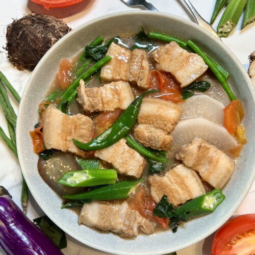

Description
My personal recipe for Filipino Pork Sinigang
Ingredients
- 1kg Pork Baby Back Ribs (Cut along each rib)
- 4 Liters of Water
- 1 Medium sized red onion
- 4 Tomatoes
- 1 Bundle of Kangkong
- 1 Bundle of Sitaw
- 3 Tbsps Fish Sauce
- 1 Knorr Sinigang Mix for 2L
- 1 Knorr Sinigang Mix w/ Gabi for 2L
Steps
- Boil the pork ribs in water. Remove any scum that rises to the surface
- Add dices onions and tomatoes to the pot. Wait until they soften
- Add and mix the fish sauce.
- Add the 2 Sinigang Mix packs, mix them into the soup, then simmer while covered
- After 15 minutes taste for salt and add the sitaw
- After the pork has softened to the point of being fork tender, add the Kangkong
- Make sure to add the kangkong last because prolonged cooking will darken the broth